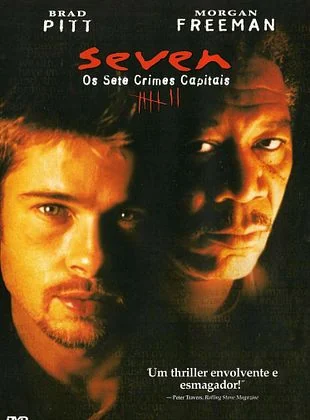

Seven: Os Sete Crimes Capitais
Dois detetives investigam uma sequência de crimes inspirados nos sete pecados capitais.
Saiba maisHistórias marcantes, personagens complexos e situações que fazem o público refletir. Confira algumas sugestões do gênero drama disponíveis no LisoFlix.

Dois detetives investigam uma sequência de crimes inspirados nos sete pecados capitais.
Saiba maisA história de jovens que crescem em uma comunidade marcada pela violência e pela desigualdade.
Saiba mais
Um professor de química passa por uma transformação radical após descobrir uma doença grave.
Ver detalhes